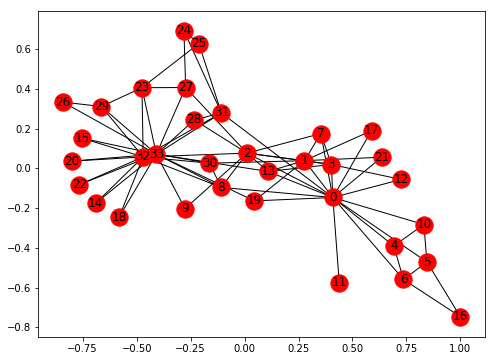

ATTENTION
You can interact with this notebook online at

AAA¶
aaa
In [1]:
import plotly.plotly as py
import plotly.graph_objs as go
import igraph
from igraph import *
igraph.__version__
Out[1]:
'0.7.1'
In [2]:
g = Graph()
g
Out[2]:
<igraph.Graph at 0x110fbb408>
In [3]:
g.add_vertices(3)
In [4]:
print(g)
IGRAPH U--- 3 0 --
In [5]:
g.add_edges([(0,1), (1,2)])
In [8]:
layout = g.layout(r"kk")
In [9]:
plot(g, layout = layout)
---------------------------------------------------------------------------
AttributeError Traceback (most recent call last)
~/.virtualenvs/delta/lib/python3.6/site-packages/IPython/core/formatters.py in __call__(self, obj)
343 method = get_real_method(obj, self.print_method)
344 if method is not None:
--> 345 return method()
346 return None
347 else:
~/.virtualenvs/delta/lib/python3.6/site-packages/igraph/drawing/__init__.py in _repr_svg_(self)
352 surface.finish()
353 # Return the raw SVG representation
--> 354 return io.getvalue().encode("utf-8")
355
356 @property
AttributeError: 'bytes' object has no attribute 'encode'
Out[9]:
<igraph.drawing.Plot at 0x1136c6240>
In [10]:
import json
import numpy as np
import networkx as nx
import matplotlib.pyplot as plt
%matplotlib inline
In [11]:
g = nx.karate_club_graph()
fig, ax = plt.subplots(1, 1, figsize=(8, 6));
nx.draw_networkx(g, ax=ax)

In [12]:
nodes = [{'name': str(i), 'club': g.node[i]['club']}
for i in g.nodes()]
links = [{'source': u[0], 'target': u[1]}
for u in g.edges()]
with open('graph.json', 'w') as f:
json.dump({'nodes': nodes, 'links': links},
f, indent=4,)
In [13]:
%%html
<div id="d3-example"></div>
<style>
.node {stroke: #fff; stroke-width: 1.5px;}
.link {stroke: #999; stroke-opacity: .6;}
</style>
In [14]:
%%javascript
// We load the d3.js library from the Web.
require.config({paths:
{d3: "http://d3js.org/d3.v3.min"}});
require(["d3"], function(d3) {
// The code in this block is executed when the
// d3.js library has been loaded.
// First, we specify the size of the canvas
// containing the visualization (size of the
// <div> element).
var width = 300, height = 300;
// We create a color scale.
var color = d3.scale.category10();
// We create a force-directed dynamic graph layout.
var force = d3.layout.force()
.charge(-120)
.linkDistance(30)
.size([width, height]);
// In the <div> element, we create a <svg> graphic
// that will contain our interactive visualization.
var svg = d3.select("#d3-example").select("svg")
if (svg.empty()) {
svg = d3.select("#d3-example").append("svg")
.attr("width", width)
.attr("height", height);
}
// We load the JSON file.
d3.json("graph.json", function(error, graph) {
// In this block, the file has been loaded
// and the 'graph' object contains our graph.
// We load the nodes and links in the
// force-directed graph.
force.nodes(graph.nodes)
.links(graph.links)
.start();
// We create a <line> SVG element for each link
// in the graph.
var link = svg.selectAll(".link")
.data(graph.links)
.enter().append("line")
.attr("class", "link");
// We create a <circle> SVG element for each node
// in the graph, and we specify a few attributes.
var node = svg.selectAll(".node")
.data(graph.nodes)
.enter().append("circle")
.attr("class", "node")
.attr("r", 5) // radius
.style("fill", function(d) {
// The node color depends on the club.
return color(d.club);
})
.call(force.drag);
// The name of each node is the node number.
node.append("title")
.text(function(d) { return d.name; });
// We bind the positions of the SVG elements
// to the positions of the dynamic force-directed
// graph, at each time step.
force.on("tick", function() {
link.attr("x1", function(d){return d.source.x})
.attr("y1", function(d){return d.source.y})
.attr("x2", function(d){return d.target.x})
.attr("y2", function(d){return d.target.y});
node.attr("cx", function(d){return d.x})
.attr("cy", function(d){return d.y});
});
});
});